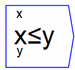
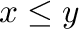

Next: eq
Up: Binary Operations
Previous: lt
Contents

Returns 0 or 1, depending on whether

is true (1) or false (0).
The operator can be placed on the canvas in two ways:
- From the Binary Operations (``binop'') toolbar; or
- By typing the letters "le" on the canvas and then pressing the Enter
key.